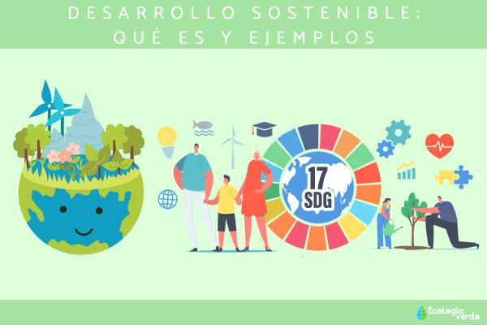
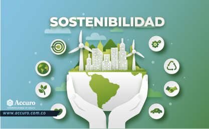
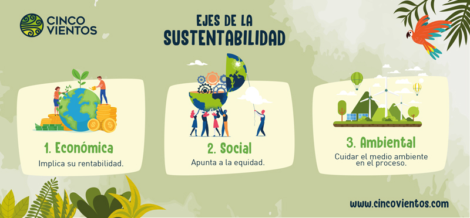
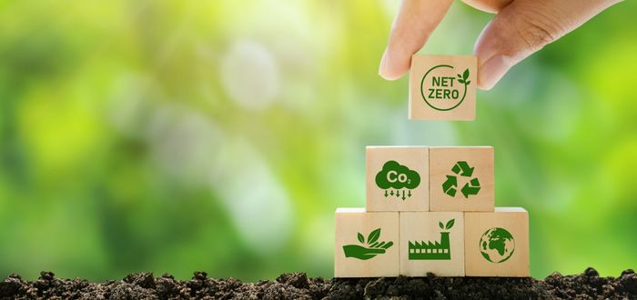

Conceptos clave para entender qué es la sostenibilidad.
La sostenibilidad ambiental implica reducir el impacto negativo de las actividades humanas sobre el medio ambiente y maximizar los beneficios positivos. Se basa en la comprensión de los límites naturales del planeta y la necesidad de preservar la biodiversidad y los ecosistemas.
“El desarrollo sustentable hace referencia a la capacidad que haya desarrollado el sistema humano para satisfacer las necesidades de las generaciones actuales sin comprometer los recursos y oportunidades para el crecimiento y desarrollo de las generaciones futuras.”
Caracteristicas de la sustentabilidad.
- Busca la manera de que la actividad económica mantenga o mejore el sistema ambiental.
- Tiene por objeto asegurar que la actividad económica mejore la calidad de vida de todos, no sólo de unos pocos selectos.
- También busca utilizar los recursos eficientemente.
- Promover el máximo de reciclaje y reutilización.
- Proponer la implantación de tecnologías limpias.
- Restaurar los ecosistemas dañados.
- Incentivar la autosuficiencia regional.
- Reconocer la importancia de la naturaleza para el bienestar humano. 
Principios y tipos de la sustentabilidad.
De acuerdo con el Programa UNESCO "Educando para un Futuro Sustentable", existen cuatro dimensiones de la sustentabilidad:
- Sustentabilidad Social: Se vincula con los valores y principios de la paz y la equidad para todas las personas.
- Sustentabilidad Ecológica o Ambiental: Busca la conservación del medio ambiente y los recursos naturales.
- Sustentabilidad Económica: Está relacionada con el desarrollo adecuado y ético de las empresas y el sector privado.
- Sustentabilidad Política: Tiene que ver con la democracia y la gobernabilidad de los países y sus estados. 
Ejemplos de sustentabilidad:
La sustentabilidad se puede aplicar en numerosos aspectos de la vida cotidiana. Aquí tienes algunos ejemplos concretos:
- Reciclaje de basura inorgánica: Transformar basura inorgánica en materiales reutilizables, como envases y botellas.
- Basura biodegradable: Reciclar basura biodegradable para ser utilizada como abono de plantas.
- Plantas de energía solar: Aprovechar la luz del sol para producir energía eléctrica de manera limpia y renovable.
- Parques eólicos: Utilizar la fuerza del aire para generar energía eléctrica mediante aerogeneradores.
- Energía undimotriz: Convertir la fuerza de las olas en energía eléctrica, una forma eficaz de energía renovable.
- Agricultura ecológica: Optimizar el uso de recursos naturales en la producción de alimentos orgánicos sin productos químicos.
- Aprovechamiento del agua de lluvia: Recoger y almacenar agua de lluvia para evitar desperdicios.
- Ecoturismo: Fomentar un turismo ecológico que promueva el disfrute de la naturaleza y la cultura local.
- Ciclopista solar: Diseñar vías de transporte para bicicletas que se carguen con energía solar y brillen de noche.
- Vehículos eléctricos: Usar autos eléctricos como alternativa de transporte que no contamina el ambiente. 